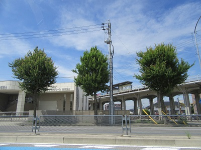
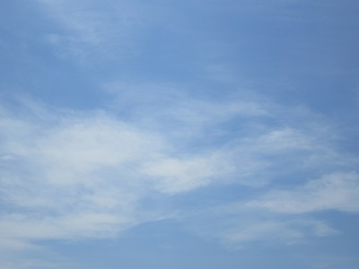
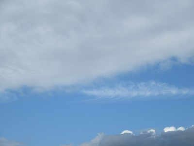

AraTech - arkw.net
荒川フォトライブラリ
管理人・荒川が撮影した使用フリーの写真集。
サムネイル画像をクリックすると原寸で表示されます。

愛環大門駅 1 [1920x1440]

空 1 [1920x1440]

空 2 [1920x1440]
使用について
無料、著作権表記不要で使用できます。
画像の再配布はご遠慮下さい。
(c) AraTech/Sora Arakawa